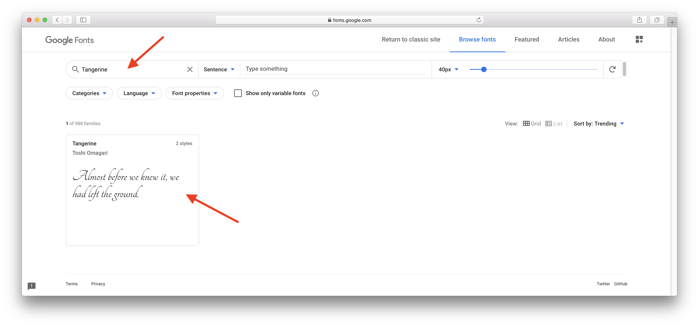
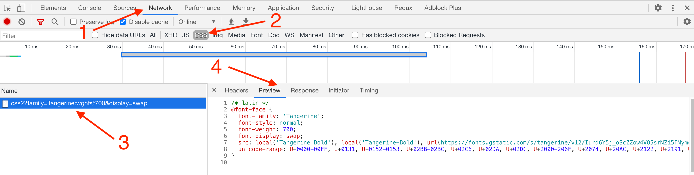

Нестандартные шрифты
Шрифт помогает сделать сайт ярким и запоминающимся. Миллионы сайтов с одним шрифтом «Times New Roman» были бы, наверное, слишком скучны. Поэтому дизайнеры создают свои шрифты, а разработчики могут использовать их в проектах.
Шрифты делятся на платные и бесплатные. Лицензию платного шрифта необходимо покупать, а использовать его без лицензии чревато нарушением авторских прав. Есть много красивых бесплатных шрифтов, которые находятся в общем доступе.
Сервис Google Fonts
Google Fonts это хранилище огромного количества бесплатных шрифтов. Всё что необходимо сделать, это найти понравившийся шрифт, получить на него ссылку и подключить в своём HTML-файле как еще одну таблицу стилей.
Скопируйте и вставьте следующий HTML-код в свой файл разметки и откройте страницу в браузере. Текст, отрисованный нестандартным шрифтом, не отличается ничем, кроме внешнего вида, поэтому для его оформления можно использовать любые CSS-свойства.
<html>
<head>
<link
href="https://fonts.googleapis.com/css2?family=Tangerine:[email protected]&display=swap"
rel="stylesheet"
/>
<style>
.title {
font-family: 'Tangerine', cursive;
}
</style>
</head>
<body>
<h1 class="title">Making the Web Beautiful!</h1>
</body>
</html>
Для того, чтобы подключить нестандартный бесплатный шрифт с сервиса Google Fonts, переходим по ссылке и попадаем на страницу поиска.

Можно пролистывать галерею шрифтов и искать понравившийся, или, если имя шрифта известно, ввести его в поле поиска и нажать на карточку шрифта.
На странице шрифта выбираем необходимый вес. Выбирать все доступные жирности не нужно, чем больше вариантов, тем тяжелее будет файл шрифта, и тем дольше будет загружаться ваша веб-страница. Тоже самое и с количеством шрифтов, обычно ограничиваются одним, максимум двумя шрифтами для всего сайта.
Не все шрифты поддерживают полный диапазон жирностей (от 100 до 900) и
начертаний (стандартный или курсив). Дизайнер создаёт набор самых популярных
значений. Если шрифт не поддерживает определённый вес, браузер будет
отрисовывать его ближайшей доступной жирностью.
Нам нужен только вес 700, потому что мы подключаем шрифт для заголовков.

На вкладке Embed копируем тег <link>, в котором указана ссылка на таблицу
стилей шрифта, и добавляем её в шапку своего HTML-документа, перед остальными
стилями.

Теперь в файле стилей можно использовать шрифт Tangerine указав его в свойстве
font-family.
Директива @font-face
Давайте разберёмся что именно мы подключили к HTML-документу в прошлой секции.
- Открываем инструменты разработчика и переходим на вкладку «Network».
- Выбираем фильтр «CSS», чтобы отображались только файлы стилей.
- Кликаем по файлу от Google Fonts.
- Выбираем вкладку «Preview», в которой отображается содержимое файла.
/* latin */
@font-face {
font-family: 'Tangerine';
font-style: normal;
font-weight: 700;
font-display: swap;
src: local('Tangerine Bold'), local('Tangerine-Bold'),
url(https://fonts.gstatic.com/s/tangerine/v12/Iurd6Y5j_oScZZow4VO5srNZi5FNym499g.woff2)
format('woff2');
unicode-range: U+0000-00FF, U+0131, U+0152-0153, U+02BB-02BC, U+02C6, U+02DA,
U+02DC, U+2000-206F, U+2074, U+20AC, U+2122, U+2191, U+2193, U+2212, U+2215,
U+FEFF, U+FFFD;
}
Итак, Google Fonts вернул нам самый обычный CSS-файл, в котором есть директива
@font-face - объявление шрифта. Эта директива позволяет указать параметры
подключаемого шрифта.
font-family- локальное имя для использования в нашем CSS-коде.font-style- тип начертаний (обычный, курсив и т. п.).font-weight- вес подключаемого шрифта.font-display- управляет отображеним текста во время загрузки шрифта.src- ссылка на сам файл шрифта и уточнение его типа, обычноwoffилиwoff2. В нашем случае файл шрифта лежит на серверах Google, но это может быть и локальный шрифт, который хранится в файлах проекта.unicode-range- указывает набор необходимых символов в шрифте из таблицы символов Unicode. Загружать все символы излишне, чем их меньше, тем быстрее загрузится шрифт.
Все известные человечеству символы (языков, математические знаки и т. п.)
собраны и описаны стандартом, называемым Unicode, в котором каждый символ
имеет имя (например, «latin capital letter a») и код (code point) — число от 0
до 10FFFF.